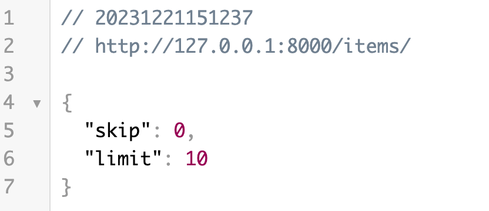
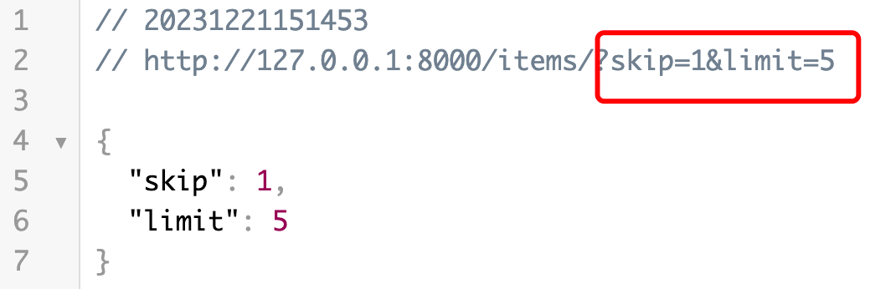
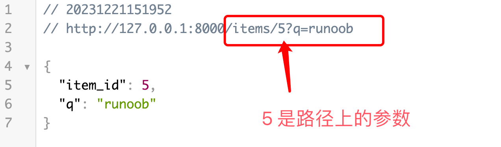
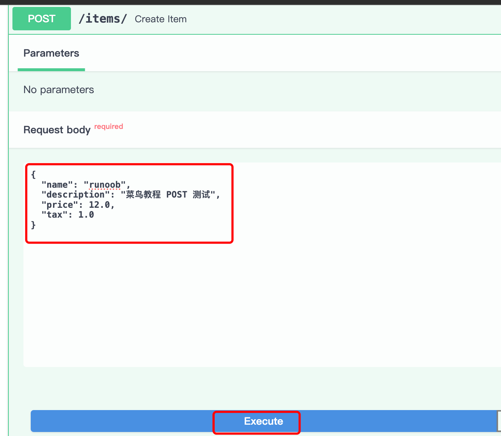
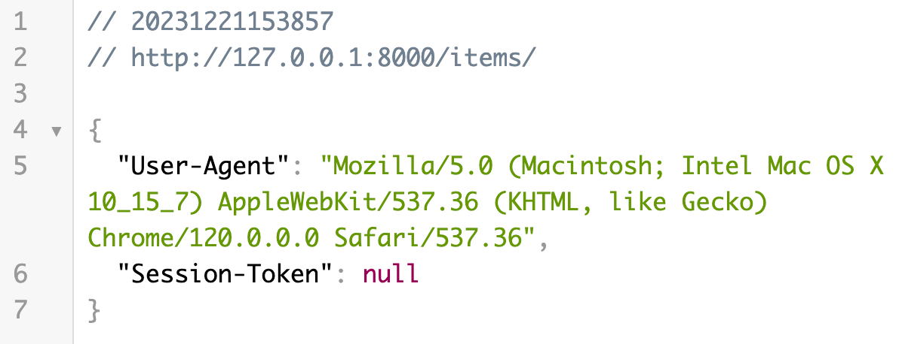
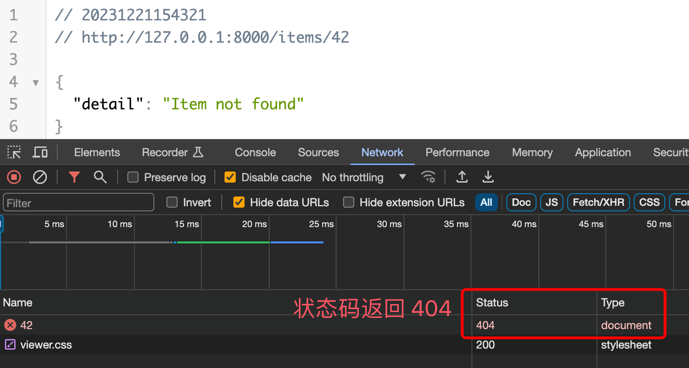
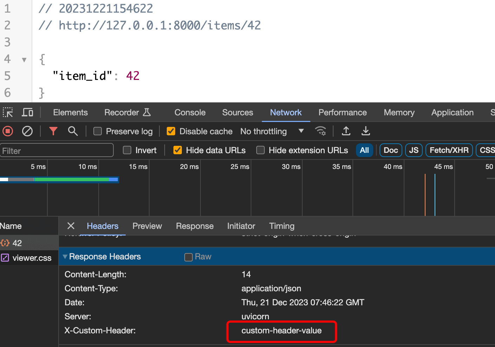

FastAPI Requests and Responses
In FastAPI, Request and Response are the core of interacting with clients.
FastAPI provides powerful tools to parse request data and generate standardized responses as needed.

Next, let's take a detailed look at FastAPI's requests and responses.
For HTTP-related content, please refer to:HTTP request methods。
Request data
Query Parameter
In the following example, we define a/items/A route that accepts two query parametersskipandlimit, their types are both integers, with default values respectively0and10。
Example
app = FastAPI()
@app.get("/items/")
def read_item(skip: int = 0, limit: int = 10):
return {"skip": skip, "limit": limit}
Run the following command in the command line to start the application:
uvicorn main:app --reload
Now, open your browser and visithttp://127.0.0.1:8000/items/, returns the default JSON data:

PassGETRequest parametershttp://127.0.0.1:8000/items/?skip=1&limit=5, returns JSON data as follows:

Path Parameter
We can set parameters on the path, making the URL look more aesthetically pleasing.
In the following example, we define a path parameteritem_idAnd query parametersqroute.
Example
app = FastAPI()
@app.get("/items/{item_id}")
def read_item(item_id: int, q: str = None):
return {"item_id": item_id, "q": q}
PassGETRequest parametershttp://127.0.0.1:8000/items/5/?q=example, returns JSON data as follows:

request body
Next, we created a/items/Routing, using@app.postThe decorator indicates that this is handlingPOSTrequest route.
Example
from fastapi import FastAPI
app = FastAPI()
class Item(BaseModel):
name: str
description: str = None
price: float
tax: float = None
@app.post("/items/")
def create_item(item: Item):
return item
Use the Pydantic model Item to define a request body, containing multiple fields, some of which have default values. For more Pydantic introduction, refer to:FastAPI Pydantic Model。
Next, we can openhttp://127.0.0.1:8000/docsto perform a POST test:
Fill in the request parameters:

The returned result is as follows:

Response data
Return JSON data
The route handler function returns a dictionary, which FastAPI will automatically convert to JSON format and send to the client as a response:
Example
app = FastAPI()
@app.get("/items/")
def read_item(skip: int = 0, limit: int = 10):
return {"skip": skip, "limit": limit}
When the above code is accessed in the browserhttp://127.0.0.1:8000/items/, it returns JSON data:
Return Pydantic model
The route handler function returns a Pydantic model instance. FastAPI will automatically convert it to JSON format and send it to the client as a response:
Example
from fastapi import FastAPI
app = FastAPI()
class Item(BaseModel):
name: str
description: str = None
price: float
tax: float = None
@app.post("/items/")
def create_item(item: Item):
return item
POST request, the returned data format is as follows:
{
"name": "example",
"description": "Example POST 测试",
"price": 12,
"tax": 1
}
Request headers and Cookies
Use Header and Cookie type annotations to get request header and cookie data.
Example
from fastapi import FastAPI
app = FastAPI()
@app.get("/items/")
def read_item(user_agent: str = Header(None), session_token: str = Cookie(None)):
return {"User-Agent": user_agent, "Session-Token": session_token}
When the above code is accessed in the browserhttp://127.0.0.1:8000/items/, it returns JSON data:

Redirects and status codes
UsageRedirectResponseImplement a redirect, redirecting the client to/items/route.
Example
from fastapi import FastAPI
from fastapi.responses import RedirectResponse
app = FastAPI()
@app.get("/items/")
def read_item(user_agent: str = Header(None), session_token: str = Cookie(None)):
return {"User-Agent": user_agent, "Session-Token": session_token}
@app.get("/redirect")
def redirect():
return RedirectResponse(url="/items/")
When the above code is accessed in the browserhttp://127.0.0.1:8000/redirect/will automatically redirect tohttp://127.0.0.1:8000/items/page:
Use HTTPException to raise exceptions and return custom status codes and detailed information.
The following examples are initem_idis42will return404Status code:
Example
app = FastAPI()
@app.get("/items/{item_id}")
def read_item(item_id: int):
if item_id == 42:
raise HTTPException(status_code=404, detail="Item not found")
return {"item_id": item_id}
When the above code is accessed in the browserhttp://127.0.0.1:8000/items/42/The page displays as follows:

Custom response headers
UsageJSONResponseCustom response headers:Example
from fastapi.responses import JSONResponse
app = FastAPI()
@app.get("/items/{item_id}")
def read_item(item_id: int):
content = {"item_id": item_id}
headers = {"X-Custom-Header": "custom-header-value"}
return JSONResponse(content=content, headers=headers)
When the above code is accessed in the browserhttp://127.0.0.1:8000/items/42/The page displays as follows, where we can see our custom response headers:

other extensions